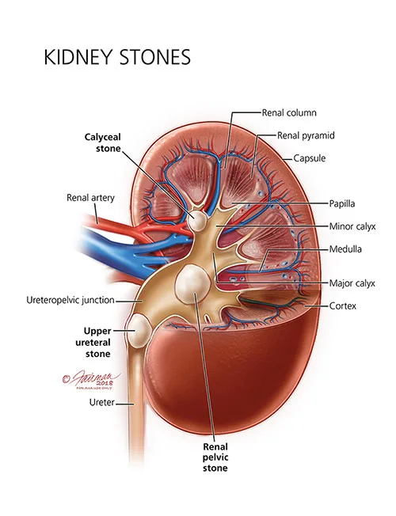
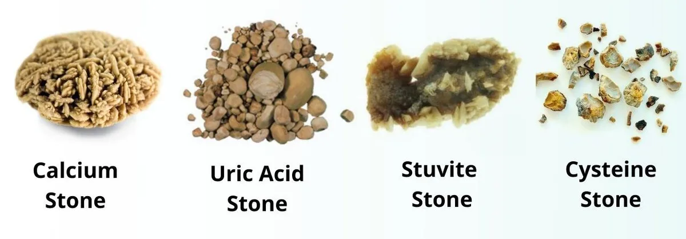
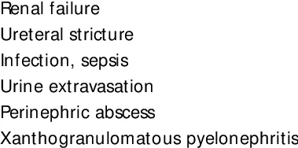

Expanded Nursing Uganda Explanation
Kidney stones should be understood beyond a short definition. Link the concept to patient history, focused assessment, common risks, nursing priorities, documentation and evaluation of outcomes.
01 Overview
Kidney Stones, also known as renal calculi, renal lithiasis, or nephrolithiasis, are small, hard deposits formed from mineral and acid salts that crystallize within the urinary tract. These deposits can form on the inner surfaces of the kidneys, but can also occur in the ureters or bladder. They can be thought of as crystallized minerals that aggregate around a nidus (a central point), which can sometimes include substances like pus, blood, or damaged tissues.
The term "urolithiasis" is a broader term that encompasses stones found anywhere in the urinary system.
Stones are primarily classified by their location within the urinary system and their chemical composition (type of crystal).
- Renal Calculi/Nephrolithiasis: Stones located within the kidney.
- Ureteral Calculi: Stones that have moved from the kidney into the ureter.
- Bladder Calculi: Stones located within the urinary bladder.
The majority of kidney stones fall into one of four main types:
- Calcium Stones (Most Common - ~70-80%): Calcium Oxalate: The most prevalent type. Can form from excessive oxalate intake (e.g., spinach, rhubarb, nuts, chocolate), or conditions leading to increased urinary oxalate excretion. Can also occur with normal calcium levels.
- Calcium Phosphate: Less common than oxalate stones. Often associated with alkaline urine and conditions like renal tubular acidosis.
- Struvite Stones (Magnesium Ammonium Phosphate - ~10-15%): Also known as "infection stones."
- Typically form in the presence of chronic urinary tract infections (UTIs) caused by urease-producing bacteria (e.g., Proteus mirabilis, Klebsiella species). These bacteria break down urea into ammonia, making the urine alkaline, which promotes struvite formation.
- Can grow very large and rapidly, forming "staghorn calculi" that fill the renal pelvis and calyces.
- Uric Acid Stones (~5-10%): More common in men.
- Associated with acidic urine, high purine intake (e.g., organ meats, seafood), and conditions like gout or myeloproliferative disorders.
- Unlike calcium and struvite stones, uric acid stones are typically non-radiopaque , meaning they may not be visible on standard X-rays, requiring other imaging modalities like CT scans for detection.
- Cystine Stones (<1-2%): Rare and genetic.
- Result from an inherited disorder called cystinuria , where the kidneys reabsorb inadequate amounts of the amino acid cystine, leading to high levels of cystine in the urine. Cystine is poorly soluble and precipitates to form stones.
- Often recurrent and can form at a young age.
Urinary stones (urolithiasis) are formed through a complex process involving the aggregation and precipitation of mineral crystals that are normally dissolved in urine. This process typically occurs when the urine becomes supersaturated with these stone-forming substances.
- Supersaturation: This is the primary prerequisite for stone formation. Urine becomes supersaturated when the concentration of a particular mineral salt (e.g., calcium oxalate, uric acid) exceeds its solubility limit. This can happen due to: Increased excretion: High levels of stone-forming substances in the urine (e.g., hypercalciuria, hyperoxaluria, hyperuricosuria).
- Low urine volume: Insufficient fluid intake leads to concentrated urine.
- Changes in urine pH: Different types of crystals precipitate at specific pH levels (e.g., calcium and struvite at alkaline pH, uric acid and cystine at acidic pH).
- Nucleation: Once supersaturation is achieved, a nidus (a small seed crystal or foreign body) forms. This can be a de novo crystal, a pre-existing crystal fragment, or even cellular debris. This nidus acts as a template for further crystal growth.
- Growth and Aggregation: Crystal Growth: Once a small crystal forms, additional ions from the supersaturated urine deposit onto its surface, causing it to grow larger.
- Aggregation: Multiple crystals can stick together, forming larger masses. Inhibitors normally present in urine (e.g., citrate, magnesium, pyrophosphate) help prevent crystal growth and aggregation, but these inhibitors can be deficient or overwhelmed.
- Retention: For a stone to become clinically significant, it must be retained in the urinary tract. This often occurs when: Adherence: Crystals adhere to the renal tubular epithelial cells, especially in the renal papillae (e.g., Randall's plaques, which are interstitial calcium phosphate deposits, can serve as anchors for calcium oxalate stones).
- Obstruction: The growing stone becomes too large to pass through the narrow passages of the renal collecting system or ureter.
- Slow Urine Flow: Allows more time for crystals to grow and aggregate.
- Origin in Renal Collecting System: Most kidney stones originate in the collecting ducts or renal papillae (part of the renal medulla). Here, conditions are often favorable for crystal formation due to concentration of urine.
- Migration to Renal Pelvis: Once formed, small crystals or microliths pass into the renal pelvis. Here, they may continue to grow in size if conditions remain supersaturated and retention occurs.
- Passage into Ureter: Stones may then attempt to pass into the ureter. Successful Passage: Small stones (< 5mm) often pass spontaneously into the bladder and are then excreted in the urine.
- Obstruction: Larger stones, or even small ones that get caught in a narrow segment of the ureter, can become impacted, obstructing the outflow of urine. This obstruction causes a build-up of pressure behind the stone, leading to pain (renal colic) and potentially hydronephrosis (dilation of the renal pelvis and calyces) and kidney damage.
- Passage to Bladder: If a stone passes the ureterovesical junction, it enters the bladder. Excretion: Many bladder stones, especially small ones, are then excreted during micturition.
- Growth and Obstruction: In some cases (e.g., with bladder outlet obstruction, foreign bodies, or chronic UTIs), stones can grow larger in the bladder and obstruct the urethra or cause irritation.
- Urine Stasis: Slow urine flow (e.g., from anatomical abnormalities, neurogenic bladder, or dehydration) allows crystals more time to settle, grow, and aggregate.
- Urinary Tract Infection: Particularly with struvite stones, urease-producing bacteria create an alkaline environment that favors magnesium ammonium phosphate precipitation.
- Deficiency of Inhibitors: Lower than normal levels of natural stone inhibitors in the urine (e.g., citrate, magnesium) can promote stone formation.
- Damage to Urinary Tract Lining: Inflammation or trauma to the lining of the urinary tract can provide sites for crystal adherence.
- Genetic Predisposition: Inherited conditions (e.g., cystinuria, primary hyperoxaluria) directly lead to high concentrations of stone-forming substances in the urine.
- Diet and Environment: Diet: High intake of certain substances (e.g., purines, oxalate, sodium) can increase their excretion in urine.
- Climate: Warm climates can lead to increased fluid loss through perspiration, resulting in lower urine volume and higher solute concentration.
Kidney stone formation is multifactorial, arising from a complex interplay of metabolic, environmental, dietary, and genetic factors. Understanding these causes is crucial for both prevention and targeted management.
These conditions lead to increased urine levels of stone-forming substances or alter urine chemistry.
- Hyperparathyroidism (Primary or Secondary): Causes hypercalcemia, leading to hypercalciuria (excess calcium in urine), a major risk factor for calcium stones.
- Renal Tubular Acidosis (RTA): A kidney disorder that results in the body accumulating acid. This leads to alkaline urine (favoring calcium phosphate and struvite stones) and hypocitraturia (low citrate, a natural stone inhibitor).
- Hyperoxaluria: Excess oxalate in the urine, a primary risk factor for calcium oxalate stones. Can be: Primary Hyperoxaluria: A rare genetic disorder causing overproduction of oxalate.
- Enteric Hyperoxaluria: Occurs after certain gastrointestinal surgeries (e.g., bariatric surgery, inflammatory bowel disease) where fat malabsorption leads to increased oxalate absorption in the gut.
- Hyperuricosuria: Excess uric acid in the urine, a risk factor for uric acid stones (and can also act as a nidus for calcium oxalate stones). Associated with: Gout: A metabolic disorder characterized by high uric acid levels.
- High purine diet: Excessive intake of organ meats, seafood.
- Myleoproliferative disorders: Conditions like leukemia or lymphoma can lead to increased cell turnover and uric acid production.
- Cystinuria: A rare, inherited genetic disorder causing impaired reabsorption of the amino acid cystine in the renal tubules, leading to high concentrations of cystine in the urine and formation of cystine stones.
- Familial Hypocalciuric Hypercalcemia (FHH): A genetic disorder causing elevated calcium levels in the blood, but typically low calcium in the urine, which is unusual. However, it is mentioned as a genetic cause of hypercalcemia.
These are often modifiable and play a significant role in stone formation.
- Inadequate Fluid Intake/Dehydration: This is one of the most common and significant risk factors. Low urine volume leads to increased concentration of solutes in the urine, promoting supersaturation and crystal precipitation. Common in: Individuals with physically demanding jobs in hot environments.
- Those who simply don't drink enough water.
- Warm climates, which cause increased fluid loss through perspiration.
- Dietary Imbalances: High Protein Intake: Especially animal protein, can increase uric acid excretion and decrease urinary citrate, promoting stone formation.
- Excessive Sodium Intake: High sodium can increase calcium excretion in the urine.
- High Oxalate Intake: Foods rich in oxalate (e.g., peanuts, spinach, rhubarb, chocolate, tea, nuts) can increase urinary oxalate levels, especially if calcium intake is low (calcium normally binds oxalate in the gut).
- Excessive amounts of tea or fruit juices: Some (like grapefruit juice) can increase oxalate, while others (like sweetened beverages) might contribute to metabolic issues.
- Large intake of calcium: While controversial, an extremely high intake of dietary calcium without sufficient fluid can contribute to calcium stone formation, though typically dietary calcium is protective if adequate.
- Medications: Diuretics (especially loop diuretics): Can increase calcium excretion.
- Vitamin C (high doses): Can be metabolized to oxalate.
- Vitamin D abuse: Increases calcium absorption and excretion.
- Antacids (calcium-based): Can contribute to excess calcium.
- Acetazolamide (Diamox): Can lead to alkaline urine and hypocitraturia.
- Indinavir (Crixivan): An antiretroviral drug that can crystallize in the urine, forming stones.
- Topiramate (Topamax): Can cause metabolic acidosis and alkaline urine.
- Chronic Urinary Tract Infections (UTIs): Especially with urease-producing bacteria (e.g., Proteus mirabilis, Klebsiella ). These bacteria break down urea, leading to alkaline urine, which promotes the formation of struvite stones .
- Obesity/Metabolic Syndrome: Associated with insulin resistance, leading to increased urinary uric acid and lower urinary pH, increasing the risk for uric acid stones.
- Gastrointestinal Conditions: Inflammatory Bowel Disease (Crohn's disease, ulcerative colitis): Can lead to fat malabsorption, increasing enteric hyperoxaluria.
- Bariatric Surgery: Similar to IBD, alters fat absorption and increases oxalate absorption.
- Immobility/Prolonged Bed Rest: Leads to bone demineralization and increased calcium excretion in the urine.
- Anatomical Abnormalities of the Urinary Tract: Ureteropelvic Junction Obstruction: Causes urine stasis.
- Horseshoe Kidney: Can alter urinary flow dynamics.
- Medullary Sponge Kidney: A congenital condition characterized by cystic dilation of the renal collecting ducts, which can predispose to stone formation.
- Family History of Stone Formation: Individuals with a family history of kidney stones are at increased risk, suggesting a genetic predisposition.
- Cystinuria, Gout, Renal Tubular Acidosis, Primary Hyperoxaluria, Familial Hypocalciuric Hypercalcemia (FHH): As mentioned above, these are specific inherited conditions.
- Slow Urine Flow: Allows accumulation of crystals and reduces the effectiveness of natural inhibitor substances.
- Low Citrate Levels: Citrate is a crucial inhibitor of calcium stone formation. Low levels can be due to RTA, chronic diarrhea, or certain medications.
- Alterations in Urine pH: As discussed, specific pH ranges favor different stone types.
The clinical manifestations of kidney stones depend primarily on the presence of obstruction, infection, and edema. Symptoms can range from being completely asymptomatic (silent stones) to excruciating pain and discomfort, often leading to an emergency presentation. The location of the stone greatly influences the type and radiation of pain.
- Pain (Renal Colic): This is the hallmark symptom and is often described as one of the most severe pains an individual can experience. Acute, excruciating, colicky, wavelike pain: Caused by the stone obstructing urine flow, leading to increased pressure in the renal pelvis and ureter, and associated spasms.
- Onset: Often sudden, without warning.
- Intensity: Can be constant or fluctuate in intensity as the ureter tries to push the stone along.
- Associated Symptoms: Often accompanied by nausea and vomiting due to the severity of the pain and activation of the vomiting center through visceral nerve reflexes.
- Patient Presentation: Patients are often restless, unable to find a comfortable position, pacing the floor, and writhing in pain.
- Hematuria: Blood in the urine. Microscopic Hematuria: Most common, detectable only by urinalysis.
- Gross Hematuria: Visible blood in the urine, often described as pink, red, or cola-colored.
- Cause: Abrasive action of the stone against the delicate lining of the urinary tract as it moves or lodges.
- Pyuria: Presence of pus or white blood cells in the urine, indicating an associated infection.
- Dysuria: Painful or difficult urination, especially if the stone is in the lower ureter or bladder.
- Urinary Urgency and Frequency: Sensation of needing to void frequently, often with little urine passed, particularly when the stone is close to the bladder.
- Fever and Chills: Indicate an associated urinary tract infection (UTI), which can be a serious complication if combined with obstruction (obstructive pyelonephritis or urosepsis).
The location of the stone dictates the specific pattern and radiation of pain.
- Stones in the Renal Pelvis/Kidney: Pain Character: Intense, deep ache in the costovertebral region (flank pain), typically posterior, just below the ribs.
- Radiation: May radiate anteriorly and downward toward the bladder, or toward the testes in males and the labia in females.
- Associated Symptoms: Hematuria and pyuria are common. Nausea, vomiting, and costovertebral angle (CVA) tenderness upon palpation or percussion are frequently present.
- Other: Abdominal discomfort, diarrhea can occur due to reflex stimulation of the gastrointestinal tract.
- Stones Lodged in the Ureter (Ureteral Colic): This is the classic presentation of "renal colic" that often brings patients to the emergency room.
- Pain Character: Acute, excruciating, colicky, wavelike pain, which can be spasmodic.
- Radiation: The pain typically follows the path of the ureter as the stone descends: If high in the ureter: Pain in the flank or upper abdomen.
- As it moves down: Radiates down the thigh, to the groin, and to the genitalia (testes in men, labia in women).
- Associated Symptoms: Frequent desire to void, but often little urine passed.
- Hematuria is very common due to the abrasive action of the stone.
- Pallor, sweating, nausea, and vomiting are frequent companions to the severe pain.
- Dysuria can occur if the stone is close to the bladder.
- Stones Lodged in the Bladder: Pain Character: Often presents with symptoms of irritation similar to a urinary tract infection. Pain may be located in the suprapubic area or perineum, especially during urination.
- Associated Symptoms: Increased frequency of micturition, urgency, dysuria.
- Hematuria.
- Urinary retention if the stone obstructs the bladder neck or urethra.
- Possible urosepsis if infection is present with the stone and causes outflow obstruction.
- If the stone irritates the bladder trigone (trigonitis), severe intraurethral or perineal pain can occur.
- A distended bladder may be present if outflow obstruction is significant.
Diagnosis of renal or ureteric stones is initially suspected based on a history of colicky abdominal pain (renal colic), often accompanied by hematuria. A comprehensive set of investigations is then performed.
- Detailed History: Crucial for understanding the patient's symptoms (onset, character, radiation of pain, associated symptoms like nausea/vomiting, urinary changes), medical history (previous stones, UTIs, metabolic conditions), medication history, and dietary habits.
- Physical Examination: Assess for CVA tenderness, abdominal tenderness, signs of dehydration, fever, and distress.
- Test Details
- 1. Kidneys, Ureters, and Bladder (KUB) X-ray Purpose: A plain abdominal X-ray can detect radiopaque stones (e.g., calcium stones, struvite stones). It helps in determining the size and general site of these stones. Limitations: Non-radiopaque stones (e.g., uric acid stones, some cystine stones) are not visible on KUB. Overlying bowel gas or bony structures can obscure visibility. Not as sensitive as other methods.
- 2. Renal Ultrasonography (Ultrasound) Purpose: A non-invasive and radiation-free imaging modality. Excellent for detecting stones within the kidney and for identifying hydronephrosis (dilation of the renal pelvis and calyces) which indicates obstruction. Can also visualize larger stones in the bladder. Advantages: Safe for pregnant patients and children. Limitations: Less effective at visualizing stones in the mid-ureter due to bowel gas interference. Does not assess renal function directly.
- 3. Non-Contrast Helical Computed Tomography (CT-KUB or CT Urography) Purpose: This is considered the gold standard imaging modality for diagnosing acute renal colic . It can detect all types of urinary stones (radiopaque and non-radiopaque), their exact size, location, and presence of hydronephrosis. It can also identify alternative causes of abdominal pain. Advantages: High sensitivity and specificity. Provides detailed anatomical information. Limitations: Involves ionizing radiation.
- 4. Intravenous Urography (IVU) or Retrograde Pyelography IVU: Involves injecting a contrast dye intravenously. Shows the kidneys, ureters, and bladder. Less commonly used now due to CT scans, but may be used when CT is unavailable. Retrograde Pyelography: Involves passing a catheter through a cystoscope into the ureter and injecting contrast dye directly. Useful when IVU is contraindicated (e.g., renal insufficiency, contrast allergy) or when upper tract visualization is poor.
- 5. Cystourethroscopy Purpose: Direct visualization of the bladder and ureters using a flexible or rigid scope inserted through the urethra. Role: Primarily therapeutic (e.g., stone retrieval, stent placement) but can also confirm the presence of stones.
- Investigation Details
- 1. Urinalysis (UA) Essential for detecting signs of infection and evaluating urine characteristics. Hematuria: Presence of RBCs. Pyuria: Presence of WBCs, suggesting infection/inflammation. Bacteriuria/Nitrites/Leukocyte Esterase: Indicate UTI. pH: Clues about stone type (alkaline = struvite/calcium phosphate; acidic = uric acid/cystine). Crystalluria: Specific crystals may suggest stone type.
- 2. Urine Culture and Sensitivity (C&S) Performed if urinalysis suggests infection. Identifies causative bacteria and antibiotic susceptibility.
- 3. Blood Chemistries CBC: Hb/HCT (dehydration/anemia), WBC (infection). Renal Function (Creatinine, BUN): Assess kidney function and obstruction. Serum Calcium: Screen for hypercalcemia. Serum Uric Acid: Screen for hyperuricemia. Electrolytes: Assess hydration status.
- 4. Stone Analysis Chemical analysis of passed/removed stone. Most definitive way to determine composition.
- 5. 24-Hour Urine Collection Recommended for recurrent formers. Measures excretion rates of calcium, uric acid, oxalate, citrate, etc., to guide prevention.
Management aims to alleviate pain, maintain renal function, prevent complications, and eradicate the stone.
Aims to alleviate pain and prevent immediate complications.
- Narcotics/Opioids: For excruciating renal colic (e.g., morphine, hydromorphone). Administered parenterally (IV/IM).
- Nonsteroidal Anti-inflammatory Drugs (NSAIDs): Such as ketorolac (Toradol), ibuprofen, or diclofenac. Highly effective for renal colic as they reduce inflammation and decrease ureteral smooth muscle spasm. They also reduce hydronephrosis by decreasing renal blood flow.
- Antispasmodics: May be used to relax ureteral smooth muscle.
- Prochlorperazine, Ondansetron: To treat nausea and vomiting.
- Increased Fluid Intake: Drink 8-10 glasses of water daily to flush out small stones (unless contraindicated).
- Intravenous (IV) Fluids: For patients unable to tolerate oral fluids or significantly dehydrated. Helps maintain renal perfusion and promotes diuresis.
- Record vital signs.
- Observe for signs of infection.
- Monitor urine output.
- Medical Expulsive Therapy (MET): Alpha-blockers (e.g., tamsulosin , nifedipine) can be used to relax the smooth muscles of the ureter, aiding passage.
- Bed Rest and Warmth: For comfort during acute pain. Ambulation may help once pain is controlled. Read this Research on how rest is important in passing out kidney stones.
- Immediate antibiotics if infection is present.
- If infection + obstruction = Urological Emergency requiring prompt drainage (stent or nephrostomy).
For larger, obstructing, or symptomatic stones.
- Extracorporeal Shock-Wave Lithotripsy (ESWL): Mechanism: Non-invasive; uses high-energy sound waves to fragment stones.
- Indications: Kidney and upper ureteral stones < 2 cm.
- Post-procedure: Expect hematuria and pain as fragments pass.
- Ureteroscopy (URS): Mechanism: Telescope passed through urethra/bladder into ureter. Stones retrieved with basket or fragmented with laser (holmium laser).
- Indications: Stones in ureter and increasingly for kidney stones.
- Post-procedure: Ureteral stent often placed temporarily.
- Percutaneous Nephrolithotomy (PCNL): Mechanism: Incision in back; nephroscope passed directly into kidney. Stones fragmented and removed.
- Indications: Gold standard for large kidney stones (> 2 cm) , staghorn calculi.
- Post-procedure: Nephrostomy tube typically placed.
- Chemolysis (Stone Dissolution): Mechanism: Altering urine pH or using agents to dissolve stone.
- Indications: Primarily uric acid stones (alkalinizing urine) and some struvite stones.
- Open Surgery (Nephrolithotomy or Ureterolithotomy): Mechanism: Traditional surgical incision.
- Indications: Rarely performed now (1-2%); reserved for very large/complex stones when other methods fail.
- Goal: Urine volume of at least 2.5-3 liters per day. Water is best.
- General: Moderate protein intake, restrict sodium.
- Calcium Oxalate Stones: Adequate Dietary Calcium: Do NOT severely restrict calcium (this increases oxalate absorption). Aim for recommended daily intake.
- Avoid High-Oxalate Foods: Peanuts, spinach, rhubarb, cabbage, tomatoes, chocolate, cocoa, tea, sweet potatoes.
- Uric Acid Stones: Low-Purine Diet (limit organ meats, seafood).
- Cystine Stones: Very high fluid intake; low sodium diet.
- Calcium Stones: Thiazide diuretics (reduce calcium excretion), Potassium Citrate (increases pH and citrate).
- Uric Acid Stones: Allopurinol (reduces uric acid), Potassium Citrate (alkalinizes urine).
- Cystine Stones: Alpha-penicillamine or Tiopronin, Potassium Citrate.
- Struvite Stones: Antibiotics (long-term low dose), Acetohydroxamic Acid.
- Avoid excessive Vitamin D.
- Avoid high-dose Vitamin C (can increase oxalate).
- No. Action Detail/Rationale
- 1 Pain Management Assess pain level, administer meds as prescribed, document effectiveness.
- 2 Fluid Intake Encourage plenty of fluids to flush stones and prevent dehydration.
- 3 Monitoring Vital Signs Check BP, HR, Temp regularly to identify infection or complications.
- 4 Strain Urine Provide strainer; instruct patient to catch stone fragments for analysis.
- 5 Assessment for Hematuria Monitor urine for blood; document color/amount.
- 6 Education Teach about condition, treatment, and lifestyle changes.
- 7 Nutritional Counseling Guidance on diet (limit oxalates, salt, animal proteins).
- 8 Ambulation Encourage activity to facilitate stone passage.
- 9 Medication Administration Administer alpha-blockers, pain meds, antibiotics.
- 10 Assess for Infection Monitor for fever, chills, cloudy/foul urine.
- 11 Prevention Measures Discuss fluids and diet to prevent recurrence.
- 12 Emotional Support Address anxiety and distress regarding pain.
- Acute Pain related to renal pressure/spasm.
- Ineffective nausea self-management related to pain/reflex stimulation.
- Inadequate Fluid Volume related to vomiting/diaphoresis.
- Impaired Urinary Elimination related to obstruction.
- Risk for Infection related to stasis/obstruction.
- Excessive Anxiety related to severe pain.
- Risk for Infection related to invasive procedures.
- Acute Pain related to tissue trauma.
- Inadequate health knowledge regarding prevention.
- Ineffective Health Maintenance related to insufficient knowledge.
Patient Presentation: 45-year-old male, 10/10 flank pain, nausea/vomiting, hematuria. History of previous stone.
Related to increased renal pressure, ureteral spasm, and stone obstruction.
- Goal: Pain reduction to acceptable level (3/10) within 30-60 mins.
- Goal: Demonstrate relaxed body posture.
- Intervention Rationale
- Assess pain characteristics (Location, intensity, quality). Baseline for effectiveness.
- Administer prescribed analgesics (Opioids, NSAIDs like Ketorolac). Opioids provide systemic relief. NSAIDs reduce inflammation and ureteral spasm.
- Provide non-pharmacological comfort (Positioning, moist heat, breathing). Augments pain relief and promotes relaxation.
- Monitor effectiveness. Ensures pain is managed.
Related to severe pain and reflex stimulation of vomiting center.
- Goal: Absence of nausea/vomiting within 1-2 hours.
- Goal: Tolerate oral fluids.
- Intervention Rationale
- Assess nausea severity. Baseline assessment.
- Administer anti-emetics (Ondansetron, Prochlorperazine). Reduces vomiting reflex.
- Provide oral hygiene after vomiting. Removes unpleasant tastes.
- Maintain NPO if actively vomiting; advance slowly. Prevents further vomiting.
Related to nausea, vomiting, decreased intake, diaphoresis.
- Goal: Maintain adequate hydration (normal skin turgor, urine output > 0.5 mL/kg/hr).
- Goal: Drink 2L fluid within 24 hours.
- Intervention Rationale
- Assess hydration status (BP, HR, skin turgor). Detects dehydration early.
- Administer IV fluids as prescribed. Rehydrates and promotes diuresis.
- Encourage oral fluid intake once nausea subsides. Maintains hydration.
- Monitor I&O. Tracks fluid balance.
Regarding prevention, diet, fluid requirements.
- Goal: Verbalize understanding of dietary mods and fluids.
02 Nursing Uganda Clinical Lens
Use Kidney stones as a practical nursing topic, not only a memorized definition. Start with normal structure and function, then connect it to assessment findings and disease.
- What to understand first: define kidney stones, identify the normal or expected pattern, then explain what changes when the patient is unwell.
- Why it matters in care: the nurse must recognize risk early, explain findings clearly, document accurately and know when to escalate.
- How to revise it: connect each point to assessment, nursing diagnosis or care problem, intervention, rationale and evaluation.
03 Assessment Guide
- Relevant inspection, palpation, movement, auscultation, vital signs or neurological checks.
- Normal findings, abnormal findings and what each abnormality may indicate.
- Patient history, risk factors and how the body system affects other systems.
04 Nursing Priorities, Rationales and Outcomes
- Use anatomy to explain symptoms and guide focused assessment.
- Recognize findings that need urgent escalation.
- Teach the patient using simple body-system language.
The rationale for these priorities is patient safety: nursing actions should prevent deterioration, reduce discomfort, support recovery and create clear evidence for the next caregiver.
- Expected outcome: The learner can explain normal function, identify abnormal signs and connect them to nursing action.
05 Patient Teaching and Revision Check
- Explain kidney stones in simple language the patient or caregiver can repeat back.
- Teach warning signs, medicine or follow-up instructions, hygiene or lifestyle points where relevant.
- For exams, prepare a short answer using: definition, causes or risk factors, signs, assessment, management, complications and prevention.
- For ward practice, document baseline findings, actions taken, patient response and the plan for review.
Illustrations and Diagrams (8)





Related Video Lectures
Watch nursing lecture videos on YouTube for this topic. Opens in a new tab.
Watch on YouTubeExternal link: YouTube may use its own cookies and terms. Nursing Uganda is not affiliated with YouTube.